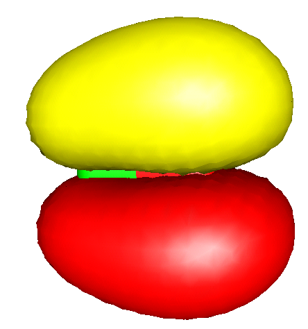

轨道与密度图（Orbital and Density Plots）¶
ORCA 中可以输出两种图形——二维等值线图（contour plots）和三维曲面图（surface plots）。可以绘制的量有原子轨道、分子轨道、自然轨道、总电子密度或总自旋密度。图形通过 %plots 块控制。
等值线图（Contour Plots）¶
等值线图通过下列变量控制
%plots
#*** the vectors defining the cut plane
v1 0, 0, 0 # pointer to the origin
v2 1, 0, 0 # first direction
v3 0, 1, 0 # second direction
#*** alternative to defining vectors. Use atom coordinates
at1 0 # first atom defining v1
at2 2 # second atom defining v2
at3 4 # third atom defining v3
#*** resolution of the contour
dim1 45 # resolution in v2-direction
dim2 45 # resolution in v3-direction
#*** minimum and maximum values along v2 and v3
min1 -7.0 # min value along v2 in bohr
max1 7.0 # min value along v2 in bohr
min2 -7.0 # min value along v3 in bohr
max2 7.0 # max value along v3 in bohr
#***
UseCol true # Use color in the plot (blue=positive,
# red=negative)
Skeleton true # Draw Skeleton of the molecule of those
# atoms that are in or close to the cut
# plane
Atoms true # Draw the atoms that are in the plane as
# circles
NCont 200 # Number of contour levels.
ICont 0 # Draw NCont equally space contours
1 # Start with 1/NCont and the double the
# value for each additional contour
#*** the format of the output file
Format Origin # straight ascii files
HPGL # plotter language files
#*** the quantities to plot
MO("MyOrbital-15xy.plt",15,0); # orbital to plot
v3= 0, 0, 1 # change cut plane
MO("MyOrbital-16xz.plt",16,0); # orbital to plot
ElDens("MyElDens.plt"); # Electron density
SpinDens("MySpinDens"); # Spin density
end
输入为：\
v1 = 0, 0, 0; v2 = 1, 0, 0; v3 = 0, 1, 0; min1= -8; max1= 8; min2= -8; max2= 8; dim1= 50; dim2=50; Format = HPGL; NCont = 200; Icont = 1; Skeleton= true; Atoms = true; MO("Test-DFT-H2CO+-MO7xy.plt",7,1);
注意：
-
命令
MO("MyOrbital-15xy.plt",15,0);应按如下方式理解：MO表示要绘制一个 MO。 \"MyOrbital-15xy.plt\" 是要创建的文件。15是要绘制的 MO 编号（记住：从轨道 0 开始计数！），0是该轨道所属的算符。对于 RHF（或 RKS）计算，只有一个算符，编号为 0。对于 UHF（或 UKS）计算，有两个算符——自旋向上轨道属于算符 0，自旋向下轨道属于算符 1。对于 ROHF 计算可能有许多算符，但最终所有轨道都会收集到一组向量中。因此在 ROHF 中算符始终 \(=\)0。 -
ELDENS（总电子密度图）和SPINDENS（总自旋密度图）命令的用法与MO类似，明显的差别是没有 MO 或算符需要定义。 -
与
ELDENS和SPINDENS类似，post-HF 密度可以通过在关键词后附加相应方法来选择。ELDENSMDCI/SPINDENSMDCI将绘制 MDCI 密度，当然只有在它可用时才行。ELDENSMP2RE和SPINDENSMP2RE适用于 MP2 弛豫密度，而ELDENSMP2UR和SPINDENSMP2UR则给出 MP2 非弛豫密度。OO-RI-MP2 密度可以通过ELDENSOO或SPINDENSOO请求。类似地，AutoCI 弛豫密度可以用ELDENSAUTOCIRE和SPINDENSAUTOCIRE关键词绘制，非弛豫密度用ELDENSAUTOCIUR和SPINDENSAUTOCIUR。 -
UNO选项绘制 UHF 波函数的自然轨道（如果它们可用）。该命令不能给出算符，因为只有一组 UHF-NO。类似地，使用UCO选项可以绘制 UHF 对应轨道。 -
如果程序找不到绘图模块（"Bad command or filename"），尝试在
%method块中使用ProgPlot="orca_plot.exe"或指向显式路径。 -
定义向量
v2和v3要求正交归一。程序将使用v3关于v2的 Schmidt 正交归一化以确保正交归一性。如果您不喜欢这样，请确保输入向量已经是正交的。 -
at1、at2和at3可以代替v1、v2和v3使用。 这种情况下，比如说v1取为原子at1的坐标。 混合定义（比如v2显式给出而v3通过at3定义）是可能的。at1、at2和at3取值 -1 表示不使用它们。 这种定义方式有时可能更方便。 -
变量可以多次赋值。变量的"实际"值与生成绘图的命令（
MO、ELDENS或SPINDENS）一起存储。因此在每个绘图命令之后可以更改下一个绘图的格式或方向。 -
Origin格式产生一个直接的 ASCII 文件，含 x、y 和 z 值，可以读入您喜欢的等值线绘图程序，或者您可以写一个小程序读取这类文件并将其转换为您觉得更合适的任何格式。 -
我通常用 Word for Windows 打开
HPGL文件，看起来工作良好。双击图形可以修改线宽等。由于某种我不清楚的原因，一些图形程序不喜欢 ORCA 产生的 HPGL 代码。如果您是 HPGL 专家并有建议——请告诉我。
曲面图（Surface Plots）¶
一般要点（General Points）¶
例如，曲面图可以通过到 Leif Laaksonen 的 gOpenMol 程序的接口创建。该程序可以从互联网免费获得。它可在多种平台上运行，易于使用，产生高质量图形，且易于接口1——感谢 Leif 提供这个程序！
相关的 [PLOTS] 部分如下所示：
%output
XYZFile true
end
%plots
dim1 45 # resolution in x-direction
dim2 45 # resolution in y-direction
dim3 45 # resolution in z-direction
min1 -7.0 # x-min value in bohr
max1 7.0 # x-min value in bohr
min2 -7.0 # y-min value in bohr
max2 7.0 # y-max value in bohr
min3 -7.0 # z-min value in bohr
max3 7.0 # z-max value in bohr
Format gOpenMol_bin # binary *.plt file
gOpenMol_ascii # ascii *.plt file
Gaussian_Cube # Gaussian-cube format
# (an ASCII file)
MO("MyOrbital-15.plt",15,0); # orbital to plot
MO("MyOrbital-16.plt",16,0); # orbital to plot
UNO("MyUNO-48.plt",48); # UHF-NO to plot
ElDens("MyElDens.plt"); # Electron density
SpinDens("MySpinDens.plt"); # Spin density
end
注意
- 诚然手动输入用于绘图的立方体尺寸很不方便。如果您什么都不做，使得
min1 = max1 = min2 = max2 = min3 = max3=0，那么程序会尝试自行判断出一个合适的立方体尺寸。它会查看坐标的最小值和最大值，然后在每个维度上加 7 bohr，希望能正确捕捉所有波函数尾部。
有时您会在查看输出文件并决定对哪些轨道感兴趣之后再生成轨道图。这种情况下您也可以以粗略的交互形式运行 orca_plot 程序，调用方式为：
这将为您提供该程序功能的一个子集，但可能已经足以产生您想看的图形。请注意，对于 GBW 文件名，您也可以输入由自然轨道（通常为 *.uno）、对应轨道（通常为 *.uco）或定域轨道（通常为 *.loc）产生的文件。
进入交互程序后，输入 '1' 选择 'Enter type of plot,'，您将访问与当前计算文件（MyGBWFile.gbw）相关的可用绘图功能列表：
-----------------------------------------------------------------------
Plot-Type is presently: 1
-----------------------------------------------------------------------
Searching for Ground State Electron or Spin Densities: ...
-----------------------------------------------------------------------
1 - molecular orbitals
2 - (scf) electron density ...... (scfp ) => AVAILABLE
3 - (scf) spin density ...... (scfr ) => AVAILABLE
4 - natural orbitals
5 - corresponding orbitals
6 - atomic orbitals
7 - mdci electron density ...... (mdcip ) - NOT AVAILABLE
8 - mdci spin density ...... (mdcir ) - NOT AVAILABLE
9 - OO-RI-MP2 density ...... (pmp2re ) - NOT AVAILABLE
10 - OO-RI-MP2 spin density ...... (pmp2ur ) - NOT AVAILABLE
11 - MP2 relaxed density ...... (pmp2re ) - NOT AVAILABLE
12 - MP2 unrelaxed density ...... (pmp2ur ) - NOT AVAILABLE
13 - MP2 relaxed spin density ...... (rmp2re ) - NOT AVAILABLE
14 - MP2 unrelaxed spin density ...... (rmp2ur ) - NOT AVAILABLE
15 - LED dispersion interaction density ...... (ded21 ) - NOT AVAILABLE
16 - Atom pair density
17 - Shielding Tensors
18 - Polarisability Tensor
19 - AutoCI relaxed density ...... (autocipre ) - NOT AVAILABLE
20 - AutoCI unrelaxed density ...... (autocipur ) - NOT AVAILABLE
21 - AutoCI relaxed spin density ...... (autocirre ) - NOT AVAILABLE
22 - AutoCI unrelaxed spin density ...... (autocirur ) - NOT AVAILABLE
-----------------------------------------------------------------------
Searching for State or Transition State AO Electron Densities: ...
-----------------------------------------------------------------------
23 - CIS unrelaxed transition AO density ...... (Tdens-CIS ) - NOT AVAILABLE
24 - ROCIS unrelaxed transition AO density ...... (Tdens-ROCIS ) - NOT AVAILABLE
25 - CAS unrelaxed transition AO density ...... (Tdens-CAS ) - NOT AVAILABLE
26 - ICE unrelaxed transition AO density ...... (Tdens-ICE ) - NOT AVAILABLE
27 - MRCI unrelaxed transition AO density ...... (Tdens-MRCI ) - NOT AVAILABLE
28 - LFT unrelaxed transition AO density ...... (Tdens-LFT ) - NOT AVAILABLE
-----------------------------------------------------------------------
Searching for State or Transition State MO Electron Densities: ...
-----------------------------------------------------------------------
29 - CIS unrelaxed transition MO density ...... (Tdens-CISMO ) - NOT AVAILABLE
30 - ROCIS unrelaxed transition MO density ...... (Tdens-ROCISMO ) - NOT AVAILABLE
31 - CAS unrelaxed transition MO density ...... (Tdens-CASMO ) - NOT AVAILABLE
32 - ICE unrelaxed transition MO density ...... (Tdens-ICEMO ) - NOT AVAILABLE
33 - MRCI unrelaxed transition MO density ...... (Tdens-MRCIMO ) - NOT AVAILABLE
34 - LFT unrelaxed transition MO density ...... (Tdens-LFTMO ) - NOT AVAILABLE
-----------------------------------------------------------------------
Searching for State or Transition State QDPT AO Electron Densities: ...
-----------------------------------------------------------------------
35 - CAS QDPT unrelaxed transition AO density ...... (Tdens-CASQDSOC ) - NOT AVAILABLE
36 - DCDCAS QDPT unrelaxed transition AO density ...... (Tdens-CASDCDQDSOC ) - NOT AVAILABLE
37 - CAS CUSTOM E QDPT unrelaxed transition AO density ...... (Tdens-CASCUSTOMEQDSOC ) - NOT AVAILABLE
38 - NEVPT2 QDPT unrelaxed transition AO density ...... (Tdens-CASPTQDSOC ) - NOT AVAILABLE
39 - QDNEVPT2 QDPT unrelaxed transition AO density ...... (Tdens-CASQDPTQDSOC ) - NOT AVAILABLE
40 - MRCI QDPT unrelaxed transition AO density ...... (Tdens-MRCIQDSOC ) - NOT AVAILABLE
41 - ROCIS QDPT unrelaxed transition AO density ...... (Tdens-ROCISQDSOC ) - NOT AVAILABLE
42 - LFT QDPT unrelaxed transition AO density ...... (Tdens-LFTQDSOC ) - NOT AVAILABLE
H\(_{2}\)CO 的 \(\pi^{\ast}\) 轨道，由 RI-BP/VDZP 方法计算。
另见
分数占据加权密度（FOD）的可视化在 fod.plot 中描述。
到 gOpenMol 的接口（Interface to gOpenMol）¶
以下是用 gOpenMol 生成这些图的简要说明：
-
首先必须通过在
[OUTPUT]块中选择XYZFile=true来保存分子几何结构。这将产生一个直接的 ascii 文件，包含分子几何结构（或者简单地用! XYZFile）。 -
生成绘图文件后启动 gOpenMol 并选择 File-Import-Coords。在对话框中选择 XYZ 格式并选中文件。然后按 apply 和 dismiss。分子现在应显示在图形窗口中。
-
可以通过选择 View-Atom type 来改变外观。
-
背景颜色可以用 Colour-Background 更改。
-
完成上述操作后选择 Plot-Contour 并选择 Browse 按钮以选取合适的文件。然后按 Import File 将其读入。注意：只能直接读取以
gOpenMol_bin格式产生的文件。如果您选择了gOpenMol_ascii，必须先使用 Run-Pltfile (conversion) 下的 gOpenMol 文件转换工具生成二进制 plt 文件。 -
读入 plt 文件后，选择合适的等值面值（轨道的正瓣和负瓣各一个），并通过等值面值右侧的 Colour(n) 选择合适的颜色。Details 按钮允许您在实体和网格表示以及其他内容之间选择。
-
当图形看起来符合您的要求后，使用 File-Hardcopy 生成出版质量的 postscript 或位图图片，可导入任何文字处理或图形软件。
到 Molekel 的接口（Interface to Molekel）¶
Molekel 程序（http://ugovaretto.github.io/molekel/）是另一个漂亮且易用的图形工具，推荐与 ORCA 配合使用。您可能甚至觉得它比 gOpenMol 更易用，但这可能因个人口味而异。要用 Molekel 生成图形，请遵循下列步骤：
-
如上所述，用 ORCA 生成 Gaussian-Cube 文件（以及可选的 XYZ 文件）。
-
启动 Molekel 并用右键获得 Load 菜单。
-
选择格式 xyz 以加载您的坐标。
-
再次用右键选择 Surface 菜单。
-
选择格式 "Gaussian Cube" 并点击 Load Surface。
-
如果您要可视化轨道或自旋密度，点击 Both Signs。
-
在 Cutoff 框中选择合适的等值面值。
-
点击 Create Surface。就完成了！
-
在 Color 菜单（也可通过右键获得）中可以调整颜色，在主菜单中调整分子的显示选项。默认设置在一个启动文件中，您可以修改以符合自己的口味。更多细节见 Molekel 手册——去看看；它还能为您做许多其他有用的事情！
MO、自然轨道、电子密度和自旋密度的三维表示可视化通常比检查 MO 系数更直观，在章节
utilities.plots 中有详细描述。此类可视化所需的文件
可以方便地用 ORCA 以各种方式生成，然后在
gOpenMol 和 Molekel 等可视化软件中打开。2
下面的例子中，我们简要描述 MO 的可视化。
要用 gOpenMol 可视化 MO，可以用 orca_plot 工具程序从 gbw 文件以 gOpenMol_bin 格式生成 MO 的 plt 文件，也可以直接从 ORCA 运行中通过输入文件的 %plots 块生成：
%plots
#*** the vectors defining the cut plane
v1 0, 0, 0 # pointer to the origin
v2 1, 0, 0 # first direction
v3 0, 1, 0 # second direction
#*** alternative to defining vectors. Use atom coordinates
at1 0 # first atom defining v1
at2 2 # second atom defining v2
at3 4 # third atom defining v3
#*** resolution of the contour
dim1 45 # resolution in v2-direction
dim2 45 # resolution in v3-direction
#*** minimum and maximum values along v2 and v3
min1 -7.0 # min value along v2 in bohr
max1 7.0 # min value along v2 in bohr
min2 -7.0 # min value along v3 in bohr
max2 7.0 # max value along v3 in bohr
#***
UseCol true # Use color in the plot (blue=positive,
# red=negative)
Skeleton true # Draw Skeleton of the molecule of those
# atoms that are in or close to the cut
# plane
Atoms true # Draw the atoms that are in the plane as
# circles
NCont 200 # Number of contour levels.
ICont 0 # Draw NCont equally space contours
1 # Start with 1/NCont and the double the
# value for each additional contour
#*** the format of the output file
Format Origin # straight ascii files
HPGL # plotter language files
#*** the quantities to plot
MO("MyOrbital-15xy.plt",15,0); # orbital to plot
v3= 0, 0, 1 # change cut plane
MO("MyOrbital-16xz.plt",16,0); # orbital to plot
ElDens("MyElDens.plt"); # Electron density
SpinDens("MySpinDens"); # Spin density
end
在本输入文件中，MO("CO-4.plt",4,0); 命令用于求值标记为 4 的算符 0 的 MO，然后将其存储在 \"CO-4.plt\" 文件中。
对于 RHF 和 ROHF，应始终使用算符 0。对于 UHF，算符 0 和 1
分别对应自旋向上和自旋向下轨道。
当生成的 plt 文件用 gOpenMol 打开时（详见章节
plots.surface），CO 分子教科书般的 \(\pi\) 和 \(\pi^{\ast}\) MO
如图 fig:629 所示。
AB


由 ORCA 到 gOpenMol 的接口得到的 CO 分子的 (a) \(\pi\) 和 (b) \(\pi^\ast\) MO。
如果请求了 gOpenMol_ascii 文件格式，则可能需要 gOpenMol 转换工具
或其他工具将此人类可读文件转换为机器可读的 gOpenMol_bin 格式。
要使用到 Molekel 的接口，需要生成 Cube 或 Gaussian_Cube 格式的 ASCII 文件。这样的 ASCII 文件实际上可以在不同平台之间传输。Cube 格式可以在 %plots 块中如下请求：
%output
XYZFile true
end
%plots
dim1 45 # resolution in x-direction
dim2 45 # resolution in y-direction
dim3 45 # resolution in z-direction
min1 -7.0 # x-min value in bohr
max1 7.0 # x-min value in bohr
min2 -7.0 # y-min value in bohr
max2 7.0 # y-max value in bohr
min3 -7.0 # z-min value in bohr
max3 7.0 # z-max value in bohr
Format gOpenMol_bin # binary *.plt file
gOpenMol_ascii # ascii *.plt file
Gaussian_Cube # Gaussian-cube format
# (an ASCII file)
MO("MyOrbital-15.plt",15,0); # orbital to plot
MO("MyOrbital-16.plt",16,0); # orbital to plot
UNO("MyUNO-48.plt",48); # UHF-NO to plot
ElDens("MyElDens.plt"); # Electron density
SpinDens("MySpinDens.plt"); # Spin density
end
要可视化存储在 *.cube 文件中的 MO，启动 Molekel 并
通过右键点击加载 *.xyz 文件和/或 *.cube 文件。
或者，导航到表面菜单，选择 "gaussian-cube" 格式，
并加载表面。对于轨道，点击 "both signs" 按钮并在 "cutoff" 字段中选择
一个等值面值。然后点击 "create surface"。
图形的配色方案和其他细节可以轻松地按需调整。最后，通过 Molekel 的 "snapshot" 功能创建文件。图 fig:631 展示了图 fig:629 的 Molekel 版本。
AB


由 ORCA 到 Molekel 的接口得到的 CO 分子的 (a) \(\pi\) 和 (b) \(\pi^\ast\) MO。
值得注意的是，还有其他几个免费软件，如 UCSF CHIMERA，可以读取 Gaussian_Cube 文件并提供高质量的图形。
在某些情况下，以定域分子轨道可视化电子结构可能相当有帮助。由于占据轨道之间的幺正变换不改变总波函数，这样的变换可以应用于正则 SCF 轨道而不改变 SCF 波函数的物理内容。定域轨道更接近化学家常常喜欢思考的轨道图像。 按 Pipek-Mezey 布居定域化方案的定域轨道相当容易计算。例如，下列运行 重现了 Pipek 和 Mezey 在其原始论文中对 N\(_{2}\)O\(_{4}\) 分子 所报告的计算。
基于该作业的输出文件，定域 MO 由六个类芯轨道（每个 N 一个，每个 O 一个）、每个氧上两个不同的孤对、每个 N-O 键一个 \(\sigma\)- 和一个 \(\pi\)-成键轨道以及一个对应于该分子主要共振结构的 N-N \(\sigma\)-成键轨道组成。您还会在运行计算的目录中找到扩展名为.loc 的文件。与标准 gbw 文件一样，它可用于提取用于绘图的文件或作为另一次计算的输入（警告！定域轨道没有明确定义的轨道能量。如果您确实将它们用作另一次计算的输入，请在 %scf 块中使用 GuessMode=CMatrix）。
-
有一些关于该程序在 Windows 平台上问题的报告。显然显示设置选择 "true color 32 bit" 而非 "high 16 bit" 会更好。感谢 Thomas Brunold！ ↩
-
Molekel开发者要求如下引用——请 按他们的要求做：MOLEKEL 4.2, P. Flukiger, H.P. Lüthi, S. Portmann, J. Weber, Swiss Center for Scientific Computing, Manno (Switzerland), 2000-2006.
S. Portmann, H.P.Łüthi. MOLEKEL: An Interactive Molecular Graphics Tool. CHIMIA (2000), [54]{.underline}, 766-770. The program appears to be maintained by Ugo Varetto at this time. ↩